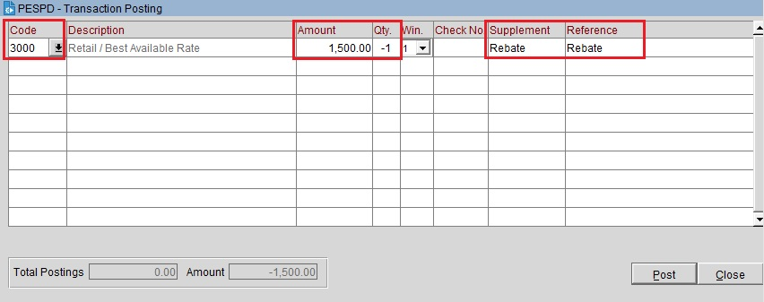

Rebate - это случай, когда делается коррекция из-за ошибочного начисления или производственной необходимости.
Rebate всегда делается с тем же Market кодом, что и указан в профайле.
Если начисление было сделано через Post Rate Code, то и Rebate необходимо делать тоже через Post Rate Code.
Если Rebate сделан в этот же день, его можно убрать, изменив его сумму на 0. (как и любые начисления).
Code (смотрим какой market code в брони, начисляем им) → в Amount пишем сумму ребейта → Qty ставим -1 (минус один) → Supplement: Rebate, Reference: Rebate → Post
Также для каждого Rebate необходимо заполнить соответствующую форму.